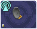
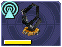
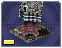

As a review, keep in mind that "artillery" here refers to all indirect-fire weapons except the mini-rocket artillery (MRL) and Angel Missiles, namely:
- Mortars (mortar, bombard, pepperpot, incendiary mortar)
- Howitzers (howitzer, ground shaker, hellstorm, incendiary howitzer)
- Ripple rockets
- Archangel missiles
Although the MRL and Angel Missiles are indirect-fire weapons, they should be used like one would use direct-fire weapons, since their range is low enough that its internal sensor can handle it; external sensors are unnecessary.

Regular sensors can be used for scouting and surveillance, but they have a more important usage: to spot for artillery.
Artillery weapons, by themselves, cannot fire more than their sensor range (8 tiles without upgrades). However, even the lowly mortar has an 18-tile weapon range. To use it, players need to use sensors.
Artillery structures are the easiest. Simply build a sensor tower, and if the sensor tower is targeting something within your artillery structures' weapon range, they will fire at it. An artillery tank, however, needs to be explicitly assigned to a sensor to function. Select the artillery tanks, then click on a sensor to assign the tank to the sensor.

Artillery assigned to a sensor. Notice the * next to them, which indicates that they are assigned.
Once the artillery is assigned, if it is assigned to a sensor tower, that tower will target enemies that come in range automatically.
If it is assigned to a sensor tank, the sensor can be used to attack enemies by selecting the sensor and targeting an enemy. All artillery assigned to the sensor will attack its target.

Notice that the artillery can be very far away — only the sensor turret needs to get within range.
To unassign a unit from a sensor, the easiest way is to right-click it, then tell it to move somewhere. Multiple units can be selected with ctrl+click, and moving them all.

A CB (Counter-Battery) tower or turret is used similarly to a standard sensor; however, it serves a specialized purpose: To counter-attack enemy artillery.
Normal sensor towers will direct your artillery to attack whatever is nearby, but CB towers will direct your artillery to attack any artillery attacking you, even if they are further away from you than other targets. If you have both a CB tower and a sensor tower, artillery structures will attack CB targets first, and only other targets once you are no longer being bombarded by enemy artillery.

A VTOL CB sensor does the same thing, except to VTOLs assigned to it.
Sensor towers and sensor units have several major differences:
- A standard sensor turret has a range of 12; a standard sensor tower has a range of 16 (special sensor turrets have the same range as their tower).
- A sensor tower cannot be ordered to target something specific; they automatically target the nearest unit (except CB and VTOL CB towers).
- A sensor turret will not target anything automatically; it must be manually ordered to attack a target
 = 
 =
= 
The Command Center (HQ) is also considered a standard sensor tower, while the Satellite Uplink Center is also considered a Wide Spectrum sensor tower. In addition to their usual functionality, they can also be used as the corresponding sensor tower (for instance, you can assign artillery to them).